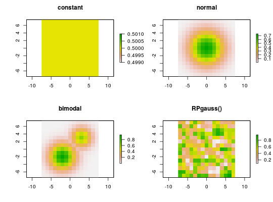

This function simulates species distributions for RAP.
sim.species(x, ...) # S3 method for RasterLayer sim.species(x, n = 1, model = list("uniform", "normal", "bimodal", RandomFields::RPgauss())[[1]], ...) # S3 method for SpatialPolygons sim.species(x, res, n = 1, model = list("normal", "uniform", "bimodal", RandomFields::RPgauss())[[1]], ...)
| x |
|
|---|---|
| ... | parameters passed to |
| n |
|
| model |
|
| res |
|
RasterStack with layers for each species.
Distributions are simulated by passing model to
RFsimulate and converting to logistic values
using inv.logit.
# make polygons sim_pus <- sim.pus(225L) # simulate 1 uniform species distribution using RasterLayer s1 <- sim.species(blank.raster(sim_pus, 1), n = 1, model = "uniform") # simulate 1 uniform species distribution based on SpatialPolygons s2 <- sim.species(sim_pus, res = 1, n = 1, model = "uniform") # simulate 1 normal species distributions s3 <- sim.species(sim_pus, res = 1, n = 1, model = "normal") # simulate 1 bimodal species distribution s4 <- sim.species(sim_pus, res = 1, n = 1, model = "bimodal") # simulate 1 species distribution using a RModel object from RandomFields s5 <- sim.species(sim_pus, res = 1, n = 1, model = RandomFields::RPgauss()) # simulate 5 species distribution using a RModel object from RandomFields s6 <- sim.species(sim_pus, res = 1, n = 5, model = RandomFields::RPgauss())#> .....# plot simulations par(mfrow = c(2,2)) plot(s2, main = "constant") plot(s3, main = "normal") plot(s4, main = "bimodal") plot(s5, main = "RPgauss()")